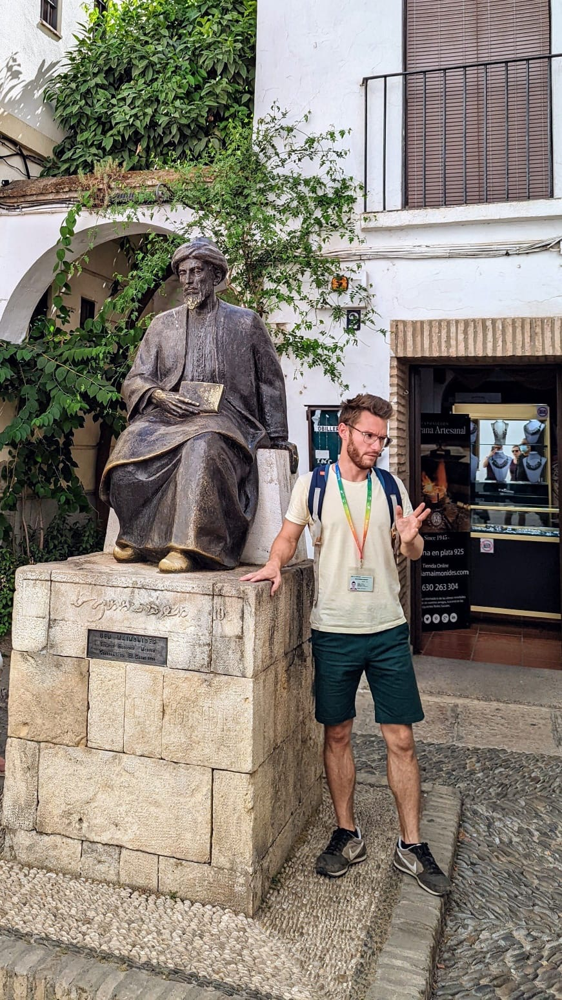

Guía Oficial de Andalucía
Córdoba,
Córdoba,
contigo.
Tours privados exclusivos. Tú decides el ritmo, el idioma y los lugares. Ricardo hace el resto.
Tours privados exclusivos. Tú decides el ritmo, el idioma y los lugares. Ricardo hace el resto.
Tours Privados
Todos los tours son privados, en tu idioma y a tu ritmo. Toca la foto de cada tour para ver más imágenes e información detallada.
 Más solicitado
Más solicitado
Tour privado · 1 hora · UNESCO
Entras y no puedes creer lo que ves. Cientos de columnas, arcos bicolores y una catedral dentro de una mezquita.


 UNESCO
UNESCO
Tour privado · 1 hora · Sinagoga incluida
Callejuelas blancas, flores en las ventanas y una sinagoga del siglo XIV que parece detenida en el tiempo.

 Ideal familias
Ideal familias
Tour privado · 1 hora
Jardines, estanques y mosaicos romanos. Donde Colón convenció a los Reyes Católicos de cruzar el Atlántico.
 Siglo I a.C.
Siglo I a.C.
Tour privado · 2 horas
El Puente Romano, los mosaicos del siglo I y los vestigios de la Córdoba antes del Islam.
 Más recomendado
Más recomendado
Tour privado · 3 horas · 3 monumentos
Mezquita, Judería y Alcázar en un solo recorrido. La experiencia más completa. Sin carreras y sin grupos.
 UNESCO 2018
UNESCO 2018
Tour privado · 3 horas
Un palacio enterrado durante siglos, a 8 kilómetros de Córdoba. Lo que verás es solo una parte de lo que fue.

 Muy popular
Muy popular
Tour privado · 2 horas
Tres o cuatro tabernas del centro. Salmorejo, flamenquín y vinos de Montilla-Moriles.
 Primera visita
Primera visita
Tour privado · 2 horas
Puente Romano, Calleja de las Flores, casco histórico. Lo mejor de Córdoba en un paseo bien contado.
UNESCO Inmaterial
Tour privado · 1-2 horas
Cada patio es una sorpresa. Flores, colores y vecinos que los cuidan como su obra de arte.
Duración y precio a consultar
Palacio de Viana, Museo Arqueológico, Casa de Sefarad o lo que quieras. Ricardo se adapta a lo que te interese.
Resultados
Cifras reales de un guía que lleva más de una década compartiendo Córdoba.
Patrimonio de la Humanidad
La ciudad con mayor concentración de Patrimonio de la Humanidad de Europa.
Cómo funciona
Reservar con Ricardo es sencillo. Sin complicaciones.
Escribe por WhatsApp o rellena el formulario. Ricardo responde en menos de 24 horas.
Selecciona el tour, la fecha, el idioma y el número de personas. Se adapta a todo.
Confirmas la reserva por tarjeta, transferencia o en persona el día del tour.
Ricardo te espera en el punto acordado. A partir de ahí, Córdoba es tuya.

Ricardo Bon Pinilla, en la Judería
Tu guía
Nací en Córdoba. Crecí en Toulouse, Francia. Viví en Canadá y Brasil. Volví a la ciudad que me vio nacer porque nada me parece más interesante que mostrarla a quien llega por primera vez.
Llevo más de diez años haciendo tours privados. No tengo un script fijo: me adapto a lo que te interesa, si eres arquitecto, viajero curioso o simplemente alguien que quiere entender Córdoba mejor. Puedo ayudarte también con el transporte para llegar y recomendaciones de restaurantes.
Opiniones
"No es un guía que recita datos. Te hace sentir que Córdoba es suya y te la está prestando por un rato. Imposible no querer volver."
"We did the complete 3-hour tour with our kids. Ricardo adapted everything. They were genuinely interested. That never happens. Book him."
"Fizemos a Medina Azahara com Ricardo e valeu cada euro. Explica tudo com paixao e um detalhe impressionante. Muito recomendado."
Contacto
Escribe por WhatsApp y hablamos en minutos. O rellena el formulario y Ricardo te responde en menos de 24 horas.
Córdoba, Andalucía, España
Todos los días, a cualquier hora